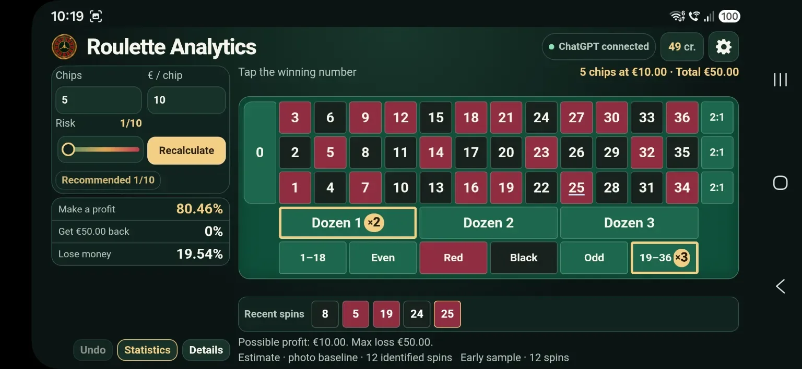
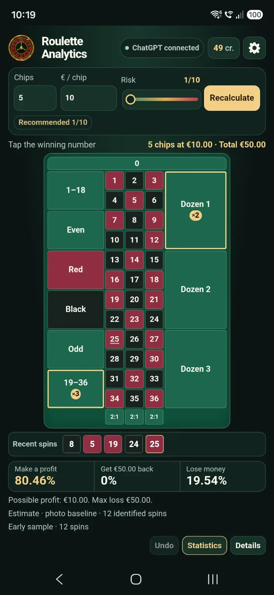
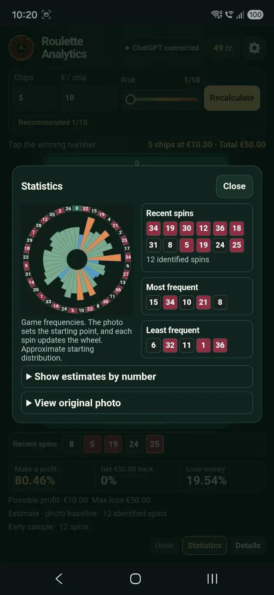
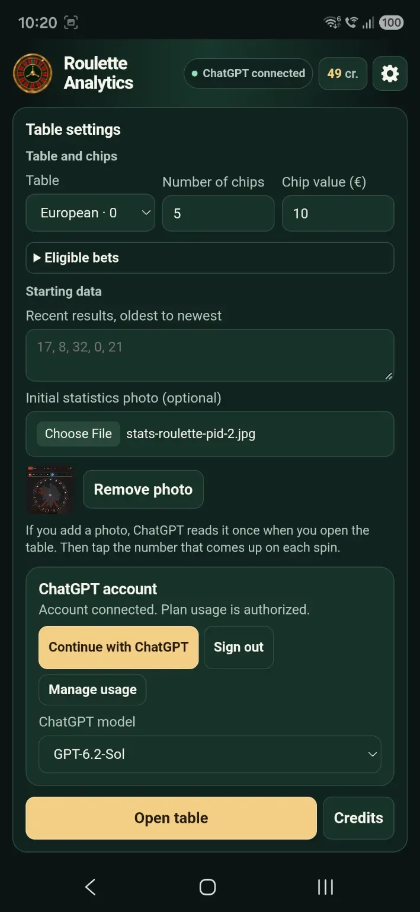
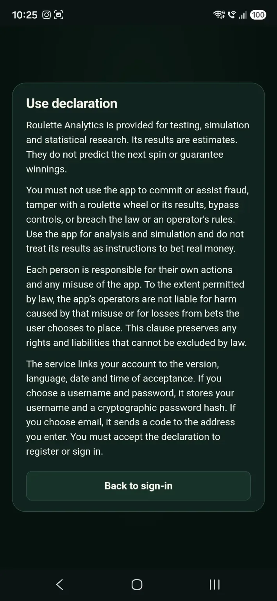

Configura el tapete
Elige ruleta europea (0) o americana (0 y 00). Indica cuántas fichas virtuales quieres usar, cuánto vale cada una y qué tipos de jugada quieres incluir. Puedes introducir resultados anteriores a mano.
1.1.29 · Android 8+
Un experimento de UrySoft con la ruleta
Registra tiradas, explora sus frecuencias y rachas, y prueba jugadas con fichas virtuales en un tapete interactivo.
Descargar gratis para AndroidIntroduce este código al crear tu cuenta desde la aplicación.
Elige ruleta europea (0) o americana (0 y 00). Indica cuántas fichas virtuales quieres usar, cuánto vale cada una y qué tipos de jugada quieres incluir. Puedes introducir resultados anteriores a mano.
Si tienes una captura o una foto de una pantalla de estadísticas de ruleta, puedes adjuntarla como punto de partida. Con ChatGPT conectado, la app analiza la imagen una vez al abrir el tapete. Usa las tiradas o frecuencias que logra identificar para formar una base inicial, que puede ser aproximada. La foto es opcional.
Toca en el tapete el número que haya salido en cada tirada. Puedes deshacer la última entrada si te equivocas. La vista de estadísticas muestra una rueda con las frecuencias por número, los resultados recientes y los números más y menos frecuentes de la muestra.
Ajusta el nivel de riesgo y recalcula para ver cómo se distribuyen las fichas virtuales. El resumen muestra estimaciones de obtener beneficio, recuperar el importe virtual o perderlo, junto con el posible beneficio y la pérdida máxima. En Detalles puedes revisar la jugada.
Roulette Analytics es un experimento de simulación e investigación estadística. Los resultados históricos no predicen la siguiente tirada. Las simulaciones no garantizan ganancias ni constituyen una recomendación para apostar. El cómic es una historia de ficción.




